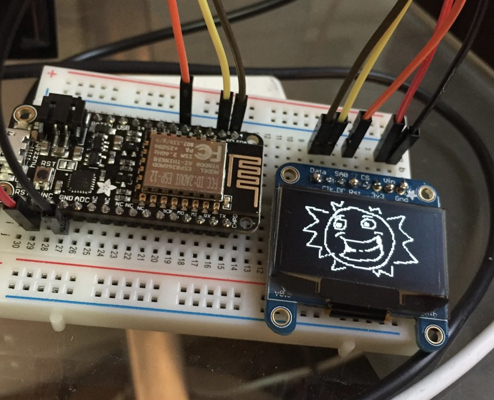
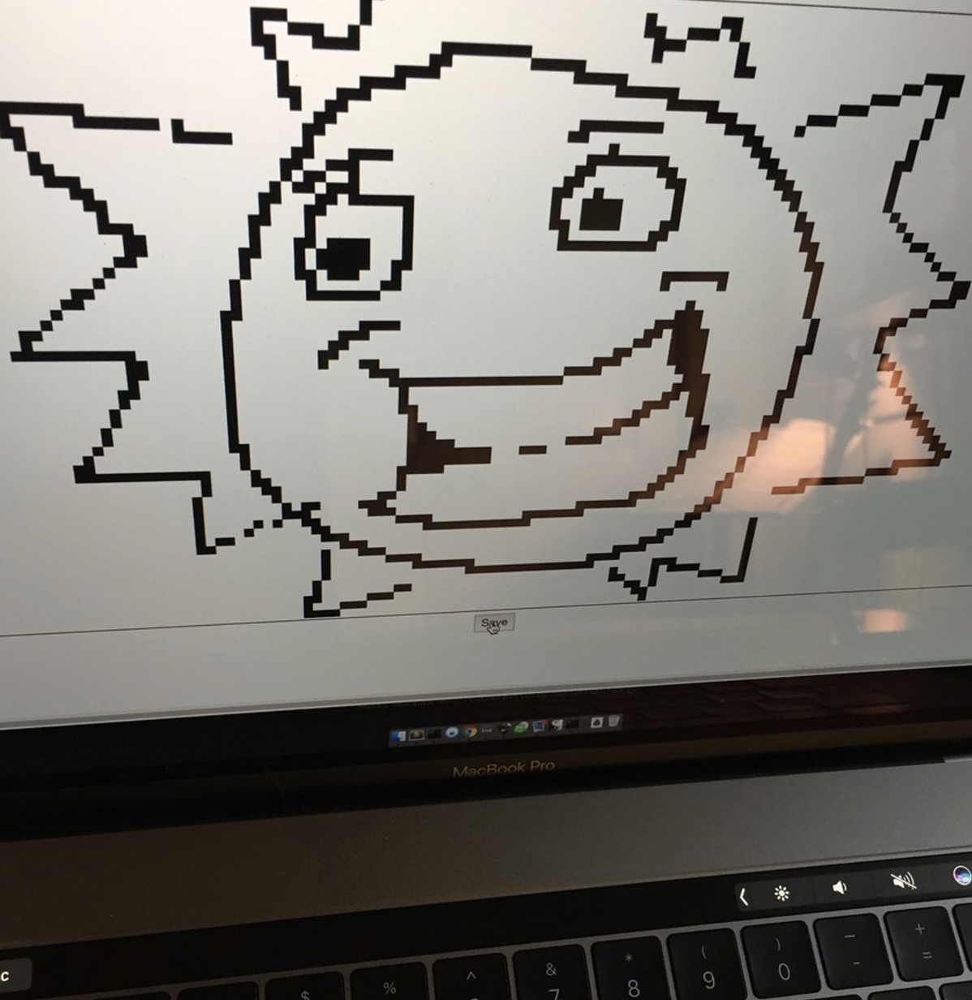

adafruit Feather Huzzah
Overview
In this project I'm using the Adafruit Feather Huzzah to build a remotely controlled mini display. To use the device, you connect to the server hosting the drawing application, and draw a picture, and then on a time interval, the Huzzah checks in and update the display based on what was drawn on the server.
I was thinking this would make a cool concept for badges at a conference; each badge would have the display, and a QR code you could scan that would take you to the server to edit the image on that badge. And then at the end of the conference everyone could have poorly draw penises on their badges (because what else would people draw.... sigh...)
The interface, in it's current state, is pretty simple; just a flask application that talks to the huzzah, and a html front end that allows you to draw on an html canvas. In the future I need to update the interface so you can draw from phone or tablet.

Issues
I started off using the Adafruit GFX library, but soon found that it only read from local ram that couldn't be updated, and it did it in 8bit chunks, so I switched up to my own bit blitting routine that worked off 16 bit integers instead.I also run into an issue of the link to the display is lost every time I pause too long reading data, I think this is the i2c timing breaking, and having to be reset but haven't checked into it yet (I just fixed it.)
The code for the server, and the Huzzah display can be found on github
Links
adafruit
arduino
feather
esp
wireless
lcd
publish